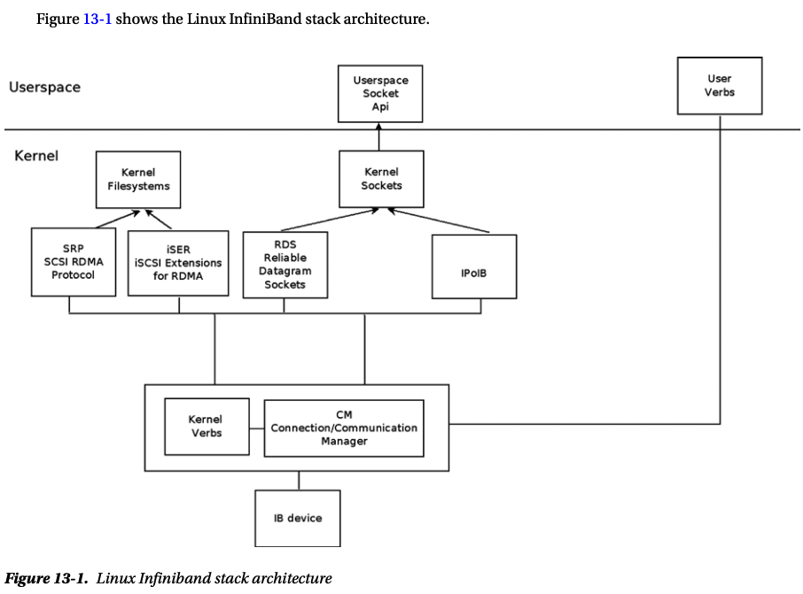
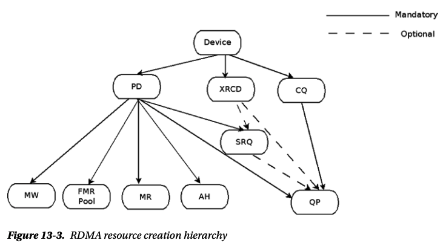
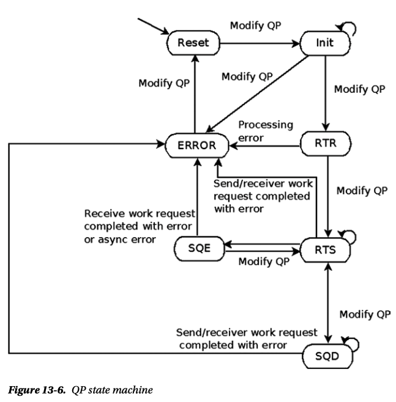

优化 RDMA 代码的建议和技巧-rdma性能优化技巧-避坑指南
优化 RDMA 代码的建议和技巧-rdma性能优化技巧-避坑指南-RDMA资源
RDMA 被用在很多地方，主要是因为它可以实现高性能。在这篇文章中，我将提供有关如何从多个方面优化 RDMA 代码的建议和技巧
简单的科普下RDMA
什么是RDMA？
DMA 代表直接内存访问。这意味着应用程序可以在 CPU 干预的情况下直接访问（读/写）主机内存。如果您在主机之间执行此操作，它将成为远程直接内存访问 (RDMA)
在阅读有关 RDMA 的内容时，您会注意到一些用于描述其优点的术语。 “零复制 Zero Copy”、“内核绕过 Kernel Bypass”、“协议卸载 Protocol Offload”和“协议加速 Protocol Acceleration”等术语
使用 RDMA 通常需要实现 InfiniBand、Omni-Path、RoCE 或 iWARP 协议的专用网络硬件。Soft-RoCE 通过标准以太网 NIC 提供 RDMA 功能。
内核中的上层协议（ULP）实现RDMA加速服务，例如IP（例如IPoIB）和存储（例如iSER、SRP）。应用程序不需要感知 RDMA 即可从这些内核提供的 RDMA 服务中受益。
应用软件可以通过使用RDMA API（例如libibverbs、libfabrics）或RDMA感知框架（例如openmpi）来感知RDMA。这些应用程序将从实施 RDMA 的网络中获益最多
IB
InfiniBand（缩写为IB）是以太网和光纤通道的替代方案。IB 提供高带宽和低延迟。IB 可以直接在一台计算机上的存储设备与另一台计算机上的用户空间之间传输数据，从而绕过并避免系统调用的开销。IB 适配器可以处理网络协议，这与在 CPU 上运行的以太网网络协议不同。这使得操作系统和 CPU 在进行高带宽传输时保持空闲，这对于 10Gb+ 以太网来说可能是一个真正的问题。
IB 硬件由 Mellanox（与 Voltaire 合并，并得到 Oracle 的大力支持）和 Intel（于 2012 年收购了 QLogic 的 IB 部门）制造。IB 最常用于超级计算机、集群和数据中心。IBM、HP 和 Cray 也是 InfiniBand 指导委员会的成员。Facebook、Twitter、eBay、YouTube 和 PayPal 是 IB 用户的示例。
IB 软件是在OpenFabrics 开源联盟下开发的
带宽
信号传输率
IB传输速率一开始对应的是PCI Express（简称PCIe）支持的最大传输速率，后来随着PCIe进步的幅度越来越小，传输速率对应了其他I/O技术，并且每个端口的PCIe通道数量反而增加了。它推出时使用 SDR（单数据速率），每通道信号速率为 2.5Gb/s（对应 PCI Express v1.0），并添加了：5Gb/s 的 DDR（双数据速率）（PCI Express v2.0） ）；10Gb/s 的 QDR（四倍数据速率）（通过改进 PCIe 3.0 的编码而不是信令速率来匹配 PCI Express 3.0 的吞吐量）；以及 14.0625Gbps 的 FDR（14 数据速率）（与 16GFC 光纤通道匹配）。IB 现在提供 25Gb/s 的 EDR（增强型数据速率）（与 25Gb 以太网相匹配）。计划在 2017 年左右实现 50Gb/s 的 HDR（高数据速率）。
有效吞吐量
由于 SDR、DDR 和 QDR 版本使用 8/10 编码（8 位数据需要 10 位信令），因此这些版本的有效吞吐量降低至 80%：SDR 为 2Gb/s/链路；DDR 速度为 4Gb/s/链路；和 8Gb/s/链路的 QDR。从 FDR 开始，IB 使用 64/66 编码，允许更高的有效吞吐量与信令速率比为 96.97%：FDR 为 13.64Gb/s/link；EDR 为 24.24Gb/s/通道；以及 48.48Gb/s/链路的 HDR。
IB 设备能够通过多个链路发送数据，尽管商业产品标准化为每条电缆 4 个链路。
当使用常见的 4X 链路设备时，这可以有效地实现以下总有效吞吐量： 8Gb/s 的 SDR；DDR 16Gb/s；32Gb/s 的 QDR；FDR 为 54.54Gb/s；EDR 为 96.97Gb/s；和 193.94Gb/s 的 HDR。
延迟
IB的延迟非常小：SDR（5us）；DDR（2.5us）；QDR（1.3us）；FDR（0.7us）；EDR（0.5us）；和 HDR（< 0.5us）。相比之下，10Gb 以太网更像是 7.22us，是 FDR 延迟的十倍。
向后兼容性
IB 设备几乎总是向后兼容。应以最低的共同标准建立联系。适用于 PCI Express 8x 插槽的 DDR 适配器应可在 PCI Express 4x 插槽中工作（带宽为一半）。
电缆
使用 QDR 时，IB 无源铜缆最长可达 7 米；使用 FDR 时，IB 无源铜缆可达 3 米。
使用 FDR 时，IB 有源光纤（光）电缆的长度可达 300 米（FDR10 上仅为 100 米）。
Mellanox MetroX 设备允许长达 80 公里的连接。每公里延迟增加约 5us。
一根IB线可以直接连接两台电脑，无需交换机；IB 交叉电缆不存在。
RDMA 的工作原理
RDMA 的工作原理是通过硬件路径（NIC 和网络）将数据从一台主机上的用户应用程序内存直接复制到另一台主机上的用户应用程序内存中。RDMA是下图中的蓝线（图 3）。绿线描绘了您早已了解的传统 TCP/IP 流量
请注意，如果应用程序驻留在内核空间中，它“仅”绕过操作系统堆栈和系统驱动程序，但这仍然提供了显著的性能提升
零复制和内核绕过
这些术语指的是 RDMA 提供的速度增益，因为与正常的 TCP/IP 行为相比，数据不必多次从应用程序内存缓冲区复制到内核内存缓冲区。RDMA通过其他复制操作传递到 NIC，NIC 通过网络将其发送到其他主机。在另一台主机上，必须发生相反的过程。 NIC 内存缓冲区中的数据被复制到内核空间，并在内核空间中再次复制并发送到用户空间到应用程序内存缓冲区。
您会注意到正在进行大量复制，这是 RDMA 避免的开销（零复制）。通过这样做，还可以避免用户空间和内核空间之间的上下文切换（内核绕过）。这极大地加快了速度。
CPU 卸载/旁路
该工作实际上被卸载到 NIC，因此它绕过了主机的 CPU（CPU Offload 或 Bypass）。这样做有两个优点：
\1. 应用程序可以访问（远程）内存，而无需内核和用户空间进程消耗任何主机 CPU 周期进行读写。
\2. CPU 中的缓存不会被访问的内存内容填充。
CPU 周期和缓存可用于实际的应用程序工作负载，而不是用于移动数据。其好处通常是 CPU 开销减少 20% 到 25%
传输协议加速
最后，RDMA 可以执行称为协议加速的操作。基于消息的事务以及进行收集/分散(SGL)的能力（读取多个缓冲区并将它们作为一个整体发送，同时将它们写入多个接收缓冲区）加快了实际数据移动的速度。这有很多细节。 SNIA（存储网络行业协会）和学术研究人员的演示文稿和出版物很容易在互联网上获得，并且可能变得相当技术性
结论是 RDMA 协议本质上是很快的。
为什么我们需要它？
除了高性能计算之外，过去十年中我们还看到各种东西方流量持续大幅增长。这始于虚拟化，它与虚拟机移动性一起带来了性能和性能的提升。可扩展性对许多资源（网络、存储、计算）提出了挑战。最重要的是，我们看到超融合基础设施（HCI）、存储复制和其他用例等趋势消耗了更多的带宽。与此同时，随着我们获得更快的存储选项（NVMe、各种类型的 NVDIMM（N、F、P）或英特尔的 3D XPoint），对超低延迟的需求也随之增加，这导致了围绕其功能的新架构。
图 4：毫无疑问，非易失性 DIMM（及其所有变体）将进一步推动对 RDMA 的需求（图片由 DELL 提供）
一般建议
1. 避免在数据路径中使用控制操作
与保留在调用它们的同一上下文中（即不执行上下文切换）并且以优化方式编写的数据操作不同，控制操作（所有创建/销毁/查询/修改）操作非常昂贵, 因为：
- 大多数时候，他们执行上下文切换
- 有时他们分配或释放动态内存
- 有时他们参与访问 RDMA 设备
作为一般经验法则，应避免调用控制操作或减少其在数据路径中的使用。
以下动词(verbs接口)被视为数据操作：
- ibv_post_send() 发送
- ibv_post_recv() 接收
- ibv_post_srq_recv() 共享接收队列
- ibv_poll_cq() 轮询完成队列
- ibv_req_notify_cq 通知完成
2. 发布多条 WR 时，一次调用将它们发布到列表中
当用verbs接口ibv_post_*()中的一个, 来发送工作请求WR时，在一次调用中将多个工作请求作为链表发布，而不是每次使用一个工作请求进行多次调用，将提供更好的性能，因为它允许低级驱动程序执行优化。
3. 使用工作完成事件时，在一次调用中确认多个事件
使用事件处理工作完成时，在一个调用中确认多个完成而不是每次调用多个调用将提供更好的性能，因为执行的互斥锁较少。
4. 避免使用许多分散/聚集条目
在工作请求（发送请求或接收请求）中使用多个分散/聚集条目意味着 RDMA 设备将读取这些条目并将读取它们引用的内存。使用一个分散/聚集条目比使用多个分散/聚集条目提供更好的性能。
5. 避免使用围栏(Fence)
设置了栅栏标志的发送请求将被阻止，直到所有先前的 RDMA 读取和原子发送请求完成。这会降低带宽。
6. 避免使用原子操作
原子操作允许以原子方式执行读取-修改-写入。这通常会降低性能，因为这样做通常涉及锁定对内存的访问（取决于实现）。
7. 一次读取多个工作完成情况
ibv_poll_cq()允许一次读取多个完成。如果CQ中的工作完成数小于尝试读取的工作完成数，则意味着CQ为空，无需检查其中是否还有更多工作完成。
8. 设置特定任务或进程的处理器关联性
当使用对称多处理 (SMP) 机器时，将进程绑定到特定的 CPU/核心可以更好地利用 CPU/核心，从而提供更好的性能。按照机器中 CPU/核心的数量执行进程并将进程分布到每个 CPU/核心可能是一个很好的做法。这可以通过“taskset”实用程序来完成。
9. 使用本地 NUMA 节点
在非统一内存访问 (NUMA) 计算机上工作时，将进程绑定到被视为 RDMA 设备的本地 NUMA 节点的 CPU/核心可能会因为更快的 CPU 访问而提供更好的性能。将进程分布到所有本地 CPU/核心可能是一个很好的做法。
10. 使用缓存行对齐的缓冲区
与使用未对齐的内存缓冲区相比，使用缓存行对齐的缓冲区（在 S/G 列表、发送请求、接收请求和数据中）将提高性能；它将减少 CPU 周期数和内存访问次数。
11. 避免进入重传流
重传是性能杀手。RDMA中重传的主要原因有2个：
- 传输重传 - 远程 QP 未处于可以处理传入消息的状态，即至少未达到 RTR 状态，或移至错误状态
- RNR重传-响应方有一条消息应该消耗一个接收请求，但接收队列中没有任何接收请求
有些 RDMA 设备提供计数器来指示重试流发生，但并非全部。
当QP进入这些流时，将QP.retry_cnt和QP.rnr_retry设置为零将导致失败（即，带有错误的完成）。
但是，如果无法避免重试流，请在重传之间使用较低（尽可能）的延迟。
提高带宽的手段
1. 找到最适合 RDMA 设备的 MTU
MTU 值指定可以发送的最大数据包有效负载大小（即不包括数据包标头）。根据经验，由于所有 MTU 值的数据包标头大小都相同，因此使用最大可用 MTU 大小将降低每个数据包的“支付价格(负载开销)”；有效负载数据占总使用带宽的百分比将会增加。但是，有些 RDMA 设备可以为低于最大支持值的 MTU 值提供最佳性能。人们应该执行一些测试，以便为他使用的特定设备找到最佳的 MTU。
2. 使用大消息
发送几条大消息比发送大量小消息更有效。在应用程序级别，第一级应该通过 RDMA 收集数据并发送大消息。
3. 处理多个未完成的发送请求
处理多个未完成的发送请求并保持发送队列始终满（即，对于每个轮询的工作完成发布一个新的发送请求）将使 RDMA 设备保持忙碌并防止其闲置。
4. 配置队列对以允许并行进行多个 RDMA 读取和原子操作
如果使用 RDMA 读取或原子操作，建议将 QP 配置为与运行中的多个 RDMA 读取和原子操作配合使用，因为它将提供更高的 BW。
5. 使用发送队列中的选择性信号
在发送队列中使用选择性信号意味着并非每个发送请求在结束时都会产生工作完成，这将减少应处理的工作完成的数量。
降低延迟的手段
1. 使用轮询(polling)读取工作完成情况
为了在工作完成添加到完成队列后立即读取它们，轮询将提供最佳结果（而不是使用工作完成事件）。
2. 以内嵌方式发送小消息
在支持内联发送数据的 RDMA 设备中，内联发送小消息将提供更好的延迟，因为它消除了 RDMA 设备（通过 PCIe 总线）执行额外读取以读取消息有效负载的需要。
3. 在 QP 的超时和 min_rnr_timer 中使用较低的值
在 QP 的超时和 min_rnr_timer 中使用较低的值意味着，如果出现错误并且需要重试（无论是因为远程 QP 没有应答还是没有未完成的接收请求），重传之前的等待时间将简短一点。
4. 如果使用立即数据，请使用 RDMA Write with立即而不是 Send with立即
当发送仅包含立即数据的消息时，带有立即数的 RDMA 写入将比带有立即的发送提供更好的性能，因为后者会导致未完成的已发布接收请求被读取（在响应方），而不仅仅是被消耗。
减少内存消耗的手段
1. 使用共享接收队列 (SRQ)
使用 SRQ 可以节省未完成的接收请求的总数，从而减少消耗的总内存，而不是为每个队列对发布许多接收请求。
2. 注册物理连续内存
寄存器物理连续内存（例如大页）可以允许低级驱动程序执行优化，因为需要较少量的内存地址转换（与 4KB 内存页缓冲区相比）。
3. 将使用的队列大小减少到最小
创建各种队列（队列对、共享接收队列、完成队列）可能会消耗大量内存。人们应该将它们的大小设置为其应用程序所需的最小值。
减少CPU消耗的手段
1. 处理工作完成事件
使用事件读取工作完成将消除在 CQ 上执行持续轮询的需要，因为当工作完成添加到 CQ 时，RDMA 设备将发送事件。
2. 在响应者端处理请求的事件
当在响应者端读取工作完成时，请求事件可以是向请求者提供提示的好方法，表明现在是读取完成的好时机。这减少了已处理的工作完成总数。
3. 与多个队列共享同一个CQ
对多个队列使用相同的 CQ 并减少 CQ 的总数将消除检查多个 CQ 的需要，以便了解未完成的工作请求是否已完成。这可以通过与多个发送队列、多个接收队列或它们的混合共享相同的 CQ 来完成。
提高可扩展性的手段
1. 使用集体算法(collective algorithms), 可参考DAOS中CART的k项树算法
使用集体算法将减少通过线路的消息总数，并减少集群中每个节点将使用的消息和资源总数。有些 RDMA 设备提供特殊的集体卸载操作，有助于降低 CPU 利用率。
2. 使用不可靠数据报 (UD) QP
如果每个节点都需要能够接收消息或向子网中的任何其他节点发送消息，则使用连接的 QP（可靠或不可靠）可能是一个糟糕的解决方案，因为将在每个节点中创建许多 QP。使用 UD QP 更好，因为它可以从子网中的任何其他 UD QP 发送和接收消息。
查看内核模块
|
|
Debian RDMA 软件包
对 RDMA 的内核支持由DebianKernel团队维护。内核为许多型号的 RDMA 硬件提供驱动程序，以及提供 ULP 支持的模块。
rdma-core: RDMA 的核心用户空间包由Debian HPC维护。
从历史上看，核心 RDMA 包的上游来源是 Open Fabrics Enterprise Distribution (OFED)。最近，这项工作的很大一部分已迁移到 rdma-core 项目
启动内核的 RDMA 模块位于/lib/modules/uname -r下的如下位置
|
|
查看链路速率
|
|
API参考
|
|
内核模块及源码位置
• CM: Communication manager (drivers/infiniband/core/cm.c)
• IPoIB: IP over InfiniBand (drivers/infiniband/ulp/ipoib/)
• iSER: iSCSI extension for RDMA (drivers/infiniband/ulp/iser/)
• RDS: Reliable Datagram Socket (net/rds/)
• SRP: SCSI RDMA protocol (drivers/infiniband/ulp/srp/)
• Hardware low-level drivers of different vendors (drivers/infiniband/hw)
• verbs: Kernel verbs (drivers/infiniband/core/verbs.c)
• uverbs: User verbs (drivers/infiniband/core/uverbs_*.c)
• MAD: Management datagram (drivers/infiniband/core/mad.c)
Linux IB 软件栈

RDMA资源及关系

QP状态机

参考
Nvidia_Mellanox_CX5和6DX系列网卡_RDMA_RoCE_无损和有损_DCQCN拥塞控制_动态连接等详解-一文入门RDMA和RoCE有损无损: Nvidia_Mellanox_CX5和6DX系列网卡_RDMA_RoCE_无损和有损_DCQCN拥塞控制_动态连接等详解-一文入门RDMA和RoCE有损无损-腾讯云开发者社区-腾讯云
分享 撰文： Dotan Barak ，2013年6月8日。2019年3月9日。 Tips and tricks to optimize your RDMA code - RDMAmojo RDMAmojo
https://blog.csdn.net/ssbandjl/article/details/134987145
RDMA性能优化经验浅谈（一）https://zhuanlan.zhihu.com/p/522332998
NSDI2023论文:SRNIC可扩展架构分析 https://www.ctyun.cn/developer/article/416756725661765
从PCIe事务微观角度看RDMA操作的性能损耗(PCIE事务/门铃/内联/迈络思网卡特性等): https://mp.weixin.qq.com/s/gtG3vZ-p-H-XE9IIVvRp9g
RDMA资源: https://gist.github.com/aagontuk/705315c94eeaf657b3f35b011c233c19
DEBIAN RDMA WiKi: https://wiki.debian.org/RDMA
ArchLinux IB WiKi: https://wiki.archlinux.org/title/InfiniBand
晓兵(ssbandjl)
博客: https://cloud.tencent.com/developer/user/5060293/articles | https://logread.cn | https://blog.csdn.net/ssbandjl
欢迎对高性能分布式存储PureFlash, SPDK, RDMA, 等高性能技术感兴趣的朋友加入PureFlash技术交流(群)
晓兵技术杂谈(系列)
https://cloud.tencent.com/developer/user/5060293/video
欢迎对DAOS, SPDK, RDMA等高性能技术感兴趣的朋友加我WX(ssbandjl)进入DAOS技术交流(群)
DAOS汇总: https://cloud.tencent.com/developer/article/2344030
晓兵
博客: https://logread.cn | https://blog.csdn.net/ssbandjl | https://cloud.tencent.com/developer/user/5060293/articles
weixin: ssbandjl
公众号: 云原生云

- 原文作者：晓兵
- 原文链接：https://logread.cn/post/rdma/rdma_perf/
- 版权声明：本作品采用知识共享署名-非商业性使用-禁止演绎 4.0 国际许可协议进行许可，非商业转载请注明出处（作者，原文链接），商业转载请联系作者获得授权。